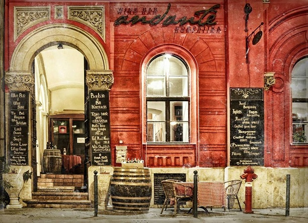
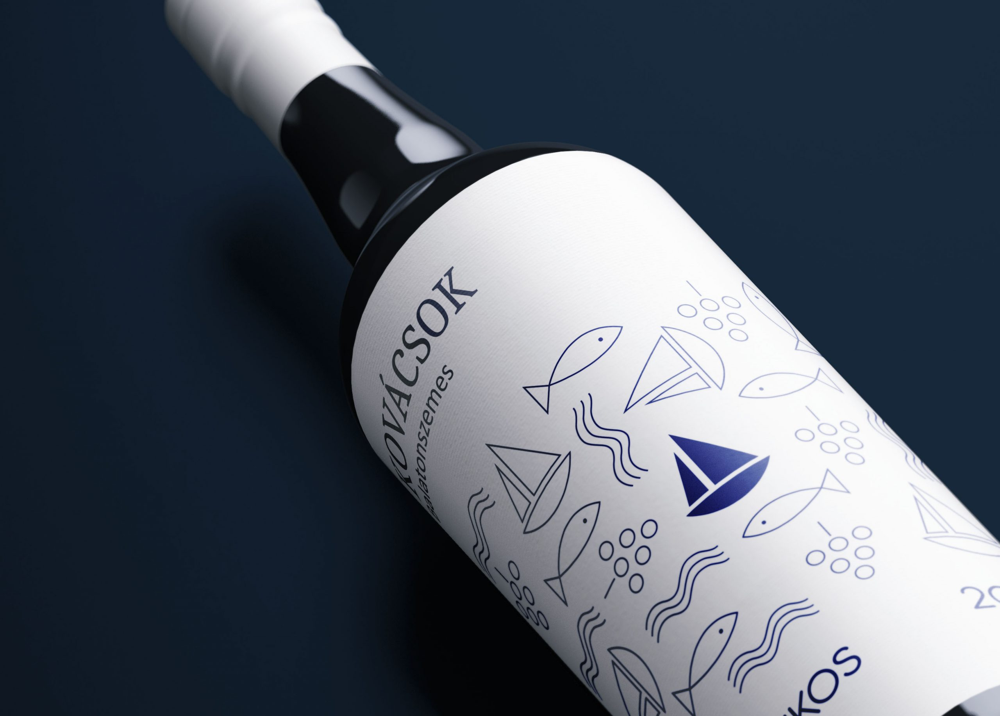

Önéletrajz
Tanulmányaim:
Középiskolát a Budapesti Fazekas Mihály Gimnáziumban végeztem, ahol 2020-ban érettségiztem le. Érettségi utáni évben megkezdtem felsőoktatási tanulmányaimat a Budapesti Műszaki- és Gazdaságtudományi Egyetem energetikai mérnöki alapszakán.
Munkahelyeim:  
Tanulmányaim mellett a családi Kovácsok borászatban dolgozom, ahol szőlőtermesztés mellett értékesítéssel is foglalkozom. 2018 és 2019 nyarán az Andante borpatikában dolgoztam pincérként, ahol mélyebb betenkintést nyerhettem a turisztikába és sommeliertől tanulhattam a borokról.